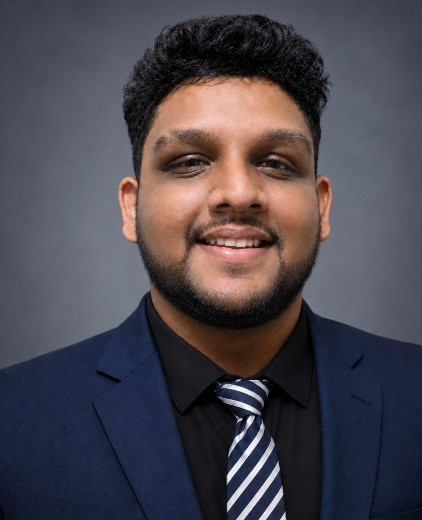

Computer Science Undergraduate | Sri Lanka
Building ideas into digital experiences.
I'm Maneth Amarasinghe, a Computer Science undergraduate at IIT, interested in software engineering, web development, cybersecurity, and AI-driven technologies. I enjoy learning new technologies, solving problems, and building practical digital experiences.

Skills I'm developing
- Python
- Java
- JavaScript
- HTML & CSS
- Object-Oriented Programming
- Git & GitHub
- Machine Learning fundamentals
My learning journey
I began with a foundation programme at IIT in 2025 and started my BSc (Hons) Computer Science in January 2026. Alongside coursework I take short online courses in software engineering, machine learning, and critical thinking, and apply them in small projects. I'm looking for internship opportunities where I can keep learning from experienced teams.
- 2025Foundation programme at IIT
- 2026BSc (Hons) Computer Science begins
- NowCourses, projects and internship search